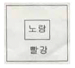
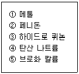
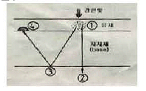
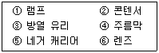

사진기능사 (2007-07-15 기출문제)
1과목: 사진일반
1. 컬러 네거티브 필름에서 녹색 감광 유제층과 적색 감광 유제층에 불필요한 청색광이 들어가는 것을 억제하기 위한 층은?
- 옐로우 필터층
- 헐레이션 방지층
- 보호층
- 중간층
(정답률: 60%)

2. 조리개를 F/1.4로 하여 촬영했을 경우 노출값이 1/2 이 되었다. 같은 조건에서 조리개 값을 F/4로 한다면 노출값은 어떻게 되는가?
- 1/4
- 1/8
- 1/16
- 1/32
(정답률: 56%)
3. 발색 현상법에 의하여 컬러 화싱을 만드는 방법 중 발색 현상주약과 커플러의 반응에 의하여 색소를 형성하는 방법은?
- 색소 생성법
- 색소 표백법
- 색소상 확산법
- 색소 전염법
(정답률: 55%)
4. 컬러 필름의 감광막은 3가지 층으로 구성되어 있는데 이에 해당하지 않는 것은?
- 황감 유제층
- 청감 유제층
- 녹감 유제층
- 적감 유제층
(정답률: 89%)
5. 드라마틱한 효과를 가져오며 피사체의 형상이나 윤곽이 가장 잘 드러난 광선은?
- 측면광(side lighting)
- 측면상부광선(high side lighting)
- 후측면광(side rear lighting)
- 정면광(front lighting)
(정답률: 49%)
6. 종이로 된 인화지를 사용하는 사진을 발명한 사람과 그 인화법이 옳게 연결된 것은?
- 다게르 - 다게레오 타입
- 탈보트 - 칼로 타입
- 아처 - 클로디온 습판법
- 빅토르 - 암브로 타입
(정답률: 80%)
7. 빛의 성질에 대한 설명 중 잘못된 것은?
- 반사면이 고르면 반사광의 질은 입사광과 유사하며, 이 경우 반사각과 입사각은 같다.
- 반사면이 거친 경우 반사광은 고르게 세분되지 못하여 여러 방향으로 흩어진다.
- 매개물이 투명체인 경우 빛의 일부는 반사하고, 일부는 흡수되며, 일부는 굴절한다.
- 조명의 밝기는 거리비의 제곱에 비례한다.
(정답률: 71%)
8. 회색 양복이 흰색 와이셔츠를 입고 짙은 빨간색 넥타이를 매었을 때 그 넥타이는 더욱 짙게 보인다. 이와 가장 관련 있는 대비 현상은?
- 명도 대비
- 채도 대비
- 색상 대비
- 보색 대비
(정답률: 54%)
9. 다음 중 사진 약품의 보관 장소로 가장 적합한 곳은?
- 그늘지고 서늘한곳
- 그늘지고 습기 찬곳
- 햇볕 드는 실내
- 했볕 드는 실외
(정답률: 98%)
10. 네거트브 컬러 인화시 기본 필터를 사용하지 않았을 때 인화지 상에 가장 두드러지게 나타나는 색상은?
- 보라
- 파랑
- 녹색
- 빨강
(정답률: 49%)
11. 색의 명시성(明視性)에 관한 설명 중 옳은 것은?
- 색의 명시성은 주위 색과는 관계없이 독립적이다.
- 색의 명시성은 색의 3속성 중 색상의 효과가 가장 크다.
- 색의 명시성은 명도에 가장 큰 영향을 받는다.
- 황색 배경에 흑색 글씨는 황색 배경에 적색 글씨보다 색의 명시성이 낮다.
(정답률: 84%)
12. 감색법으로 Yellow 와 Magents를 합쳤을 때 나타나는 색은?
- 빨강
- 녹색
- 파랑
- 검정
(정답률: 86%)
13. 그림에서 노랑색이 연두기미가 많은 노랑으로 보인다면 무슨 대비 현상 인가?

- 색상 대비
- 보색 대비
- 채도 대비
- 명도 대비
(정답률: 57%)
14. Fiber based 인화지에 대한 설명으로 틀린 것은?
- 지지체에 황산바륨이 도포되어 백색도 가 뛰어나다.
- 유제에 포함된 은량이 풍부하여 계조가 풍부하다.
- 현상시간이 2~3분 정도로 RC 인화지에 비해 다소 길다.
- 신축성이 거의 없고 수세와 건조 시간이 짧다.
(정답률: 52%)
15. 피사체가 받은 빛의 최대량과 최소량의 차이는 무엇인가?
- 반사율
- 흡수율
- 콘트라스트
- 조명비
(정답률: 52%)
16. 현상액은 현상주약, 보항제, 촉진제, 억제제, 첨가제 등의 약품 구성되어 있다. 보항제를 포함시키는 가장큰 이유는?
- 현상 속도를 빠르게 하여 감도를 높이기 위하여
- 공기중 산소에 의해 주약이 산화되는 것을 방지하기 위하여
- 제라틴 막을 연화하여 현상액의 침투를 좋게 하려고
- 현상의 진행을 조절하고, 포근(fog)를 방지하기 위하여
(정답률: 62%)
17. 다음 [보기] 중 MQ 현상액의 주성분만으로 나열 된 것은?

- ①, ②
- ①, ③
- ②, ④
- ①, ⑤
(정답률: 77%)
18. 현상 결과를 좌우하는 조건으로 가장 거리가 먼 것은?
- 현상액 온도
- 교반 회수
- 현상 시간
- 현상실 습도
(정답률: 77%)
19. 수세에 대한 일반적인 설명 중 옳지 않은 것은?
- 수세온도는 20℃ 정도이고, 시간은 흐르는 물에 30~60분 정도가 적당하다.
- 수세는 금속은 화상을 할로겐화은으로 변화시켜 씻어내는 역할을 한다.
- 수세 방법에는 유수법과 치환법이 있다.
- 수세의 목적은 잔류 하이포를 씻어 내는데 있다.
(정답률: 78%)
20. 다음 중 신속 정착액으로 주로 사용되는 약품은?
- 티오황산나트륨
- 티오황산칼륨
- 티오황산암모늄
- 아황산나트륨
(정답률: 30%)
2과목: 사진재료 및 현상
21. 그림은 필름에 강한 빛이 들어 올 때의 경로를 나타낸 것이다. 헬레이션 현상이 발생하는 위치?

- ①
- ②
- ③
- ④
(정답률: 57%)
22. 필름 타입으로 자외선, 청색, 녹색, 그리고 약간의 황색광에 감광되는 흑백필름의 감색성은?
- 정색성
- 전정색성
- 청감색성
- 적외선
(정답률: 41%)
23. 다름 사진 약품 중 주로 중간 정지액으로 사용되는 것은?
- 탄산수소나트륨
- 빙초산
- 제3 인산나트륨
- 메타 붕산나트륨
(정답률: 77%)
24. 다음 중 현상시간을 연장해야 할 경우에 해당되는 것은?
- 세로운 현상액일 때
- 액온이 높을 때
- 연속 교반할 때
- 증감 처리할 때
(정답률: 80%)
25. K3Fe(CN)6는 주로 무엇으로 사용되는가?
- 현상 촉진제
- 현상 억제제
- 정착액
- 파머씨 감력액
(정답률: 46%)
26. 흑백 RC인화지의 유제를 도포하는 쪽에 백색도를 높이고 계조 표현을 풍부하게 하기 위하여 주로 도포하는 것은?
- 염화바륨
- 이산화티타늄
- 황산바륨
- 아산화바륨
(정답률: 25%)
27. 인화지의 종류를 할로겐화은의 구성 방식에 따라 분류할 때 감도가 가장 낮은 것은?
- 가스라이트지
- 브로마이드지
- 클로로브로마이드지
- 펜크로지
(정답률: 53%)
28. 노출이 지나쳐 형상결과 필름화상이 검고 콘트라스트가 너무 강할 때 필름을 특수약물 처리하여 화상의 농도와 콘트라스트를 낮추는 것을 무엇이라 하는가?
- 보력
- 감력
- 조색
- 조제
(정답률: 87%)
29. 컬러네거티브 필름으로 흑백 인화시 사용되는 인화지는?
- Bromide
- Gaslight
- Pnaluer
- Ektaprint
(정답률: 31%)
30. 컬러 네거티브 시험인화에서 옐로우 기미가 강하다면 가장 적절한 보정 방법은?
- 옐로우 수치를 높여준다.
- 마젠타 수치를 높여준다.
- 사이안 수치를 높여준다.
- 블루 수치를 높여준다.
(정답률: 59%)
31. 화면의 크기로 카메라를 분류하면 소형 중형 대형 카메라로 분류되는데 중형 브로니판의 화면 사이즈는?
- 6 × 4.5
- 6 × 6
- 6 × 7
- 6 ×9
(정답률: 41%)
32. 망원렌즈에 대한 설명으로 옳은 것은?
- 피사계 심도가 얕다.
- 초점거리가 짧다.
- 좁은 공간에 많은 것을 촬영할 수 있다.
- 화각이 넓다.
(정답률: 86%)
33. 장마철 인화지 보관이나 카메라 손질법에 대하여 잘못 설명한 것은?
- 일반적으로 열과 습기는 카메라나 필름에 영향을 미치지 않는다,
- 카메라가 젖었을 경우 직접 불에 쬐이거나 볕에 말리지 않는다.
- 인화지는 방습제와 함께 건조한 곳에 보관한다.
- 카메라는 마른거즈 등으로 습기 찬 곳을 잘 닦아 낸다.
(정답률: 91%)
34. 컬러 슬라이드 필름으로 장시간 노출시 컬러 바란스가 깨어지는 현상과 가장 관련이 있는 것은?
- 디포메이션
- 색수차
- 상반칙 불괘
- 헬레이션
(정답률: 72%)
35. 확대기에 35mm 필름을 사용하여 확대하려고 할 때 확대기용 렌즈의 초점거리는 몇 mm인가?
- 24mm
- 50mm
- 75mm
- 100mm
(정답률: 79%)
36. FP접점에 대하여 가장 옳게 설명한 것은?
- 포컬플레인 셔터식 카메라에 장치된 싱크로 접점
- 발광시간이 짧은 플래시에 연결하는 싱크로 접점
- 스트로보를 주로 연결하는 접점
- 플래시 포인트의 약자로 약간 촬영시 시용하는 접점
(정답률: 71%)
37. 수 분의 시간 내에 현상과 인화를 카메라 몸체에서 완성하는 카메라는?
- 인스턴트 카메라
- 이안반사식 카메라
- 스테레오 카메라
- 파노라마 카메라
(정답률: 86%)
38. 피사체의 움직임에 따라 카메라를 함께 움직이면서 촬영 하는 방법을 무엇이라 하는가?
- 조리개 개방 기법
- 고감도 필름 사용 기법
- 패닝 기법
- 고속 촬영법
(정답률: 91%)
39. 원근감을 극단적으로 과장되게 표현하는 렌즈는?
- 광각 렌즈
- 망원 렌즈
- 표준 렌즈
- 컨버젼 렌즈
(정답률: 72%)
40. 일안반사식 카메라에 부착되어 롤 필름을 자동적으로 진행시켜 연속사진을 촬영할 수 있도록 하는 기구는?
- 모터드라이브
- 렌즈후드
- 어테치먼트
- 센타포커스
(정답률: 80%)
3과목: 사진기계 및 촬영
41. 셔터속도 1/60초, 조리개 8 이 적정노출일 때, 셔터 속도를 1/250초로 할 때에 가장 적합한 조리개 수치는?
- 4
- 5.6
- 11
- 16
(정답률: 74%)
42. 노출계가 지시하는 노츨의 기준으로 가장 적합한 것은?
- 1% 흰색
- 18% 중성 회색
- 50% 빨강색
- 100% 검정색
(정답률: 83%)
43. 소형 카메리일 경우 교환 렌즈의 화각을 두루 갖춘 보조 파인더는?
- 유니버셜 파인터
- 투시 파인더
- 프리즘 파인더
- 반사 파인더
(정답률: 71%)
44. 카메라 몸통(body)속에 있는 필름 압착판의 주된 역할은?
- 필름의 진행을 도와 준다.
- 광선을 차단한다.
- 필름의 평탄성을 유지시킨다.
- 촬영 매수를 계산하는 역할을 한다.
(정답률: 77%)
45. 컬러 네거티브 필름을 취급시 가장 안전한 암실의 조명은?
- 완전 암실
- 노란색 안전등
- 빨강색 안전등
- 파랑색 안전등
(정답률: 62%)
46. 카메라 내부에 설치된 센서로 광량을 측정하는 방식을 무엇이라고 하는가?
- TTL 측광 방식
- AUTO FLASH 방식
- MANUAL 방식
- NON FRASH 방식
(정답률: 91%)
47. 시트(Sheet) 필름을 사용 할 Eo 유제면 판별하는 가장 적절한 방식은?
- 필름 면을 손으로 만져서 판별한다.
- 필름을 긇어 보고 판별한다
- 명실에서 형태와 감각으로 판별한다.
- 필름의 노츠 코드(Notch code)로 판별한다.
(정답률: 93%)
48. 플래시(Flash)를 주광원으로 하여 촬영할 때 노출에 영향을 주는 요소만으로 나열한 것은?
- 가이드넘버, 셔터속도, 피사체거리, 조리개수치
- 필름감도, 피사체거리, 조리개수치, 셔터속도
- 셔터속도, 필름감도, 피사체거리, 가이드번호
- 필름감도, 가이드번호, 피사체거리, 조리개수치
(정답률: 48%)
49. 인물사진 촬영시 눈의 생동감을 빛나는 받은 흰점이 생기도록 광원을 조절하는 것과 가장 돤게 깊은 것은?
- 플랜 라이트(Plane light)
- 톱 라이트(Top light)
- 캐치 라이트(Catch light)
- 헤어 라이트(Hair light)
(정답률: 79%)
50. IOS 100/21 일 때 Guide Number 가 40인 전자플래시로 5m 거리의 피사체를 촬영코자 한다. 다음 중 가장 적당한 F값은?(단, 반사나 노출에 영향을 줄 수 있는 요인은 배제)
- F/4
- F/503
- F/8
- F/11
(정답률: 83%)
51. 광량 만을 감소시키며 색에 대해서는 변화를 가져오지 않는 필터는?
- ND 필터
- FL 필터
- SF 필터
- MC 필터
(정답률: 91%)
52. 두 눈의 시차로 거리와 입체를 지각하는 육안의 원리를 이용하여 입체 화상을 기록하기 위한 카메라는?
- 리플렉스 카메라
- 스테레오 카메라
- 파노라마 카메라
- 폴라로이드 랜드 카메라
(정답률: 72%)
53. 데이라이트 칼라 타입 필름의 경우 정상적인 색으로 발색하기 위하여 다음 어느 날씨에 맞추어져 만들어 졌는가?
- 청명한 날 아침의 태양광
- 비오는 날 오후의 태양광
- 청명한 날 정오의 태양광
- 흐린날 오후의 태양광
(정답률: 83%)
54. 피사체를 선택적으로 좁은 부분만 측정하고자 할 때 사용하기 편리한 노출계는?
- 입사식
- 스포트식
- 반사식
- 셀랜식
(정답률: 95%)
55. 확대기의 구조에서 [보기]의 부품이 위레서 아래로 배열되는 순서가 옳은 것은?

- ① -> ② -> ③ -> ④ -> ⑤ -> ⑥
- ① -> ③ -> ⑤ -> ④ -> ② -> ⑥
- ① -> ④ -> ② -> ③ -> ⑤ -> ⑥
- ① -> ③ -> ② -> ⑤ -> ④ -> ⑥
(정답률: 52%)
56. 흑백 촬영에서 구름이 있는 풍경을 촬영할 때, 푸른 하늘이 짙은 회색이 되어 구름과 분리되기 쉽도록 하고자 할 때 가장 적합한 필터는?
- UV 필터
- Blue필터
- Orange 필터
- Green 필터
(정답률: 71%)
57. 동일한 거리에서 촬영할 때 피사체의 배경을 흐리게 (out focus)하는데 가장 적합한 렌즈는?
- 망원 렌즈
- 표준 렌즈
- 광각 렌즈
- 어안 렌즈
(정답률: 86%)
58. 사진술의 발달 순서가 가장 옳게 나열 된 것은?
- 헬리오그래피 -> 다게레오타입 -> 칼로타입 -> 클로디온습판법 -> 건판사진
- 다게레오타입 ->건판사진 -> 클로디온습판법 -> 칼로타입 -> 헬리오그래피
- 헬리로그래피 -> 다게레오타입 -> 건판사진 -> 클로디온습판법 -> 칼로타입
- 칼리타입 -> 다게레오타입 -> 헬리오그래피 -> 클로디온습판법 -> 건판사진
(정답률: 85%)
59. 암실에서 사진 작업시 유의할 사항과 관계가 먼 것은?
- 사진현상 처리액은 인체에 해로울 수 있으므로 환풍장치를 설치한다.
- 젖은 손에 의한 전기장치 조작을 삼간다.
- 암실의 온도를 최대한 낮추어 주의를 집중 시킨다.
- 사진처리액 폐수는 환경오염을 유발 시킬수 있으므로 폐수처리 장치를 설치한다.
(정답률: 88%)
60. 유백색 반구가 장치된 노출계로 피사체 위치에서 피사체로 입사되는 빛을 측정하는 노출 측정법은?
- 스포트식 측정법
- 하이라이트 측정법
- 입사식 측정법
- 평균 측정법
(정답률: 74%)